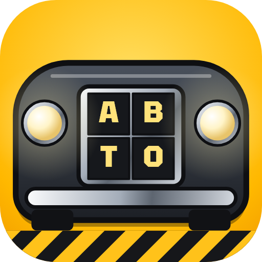
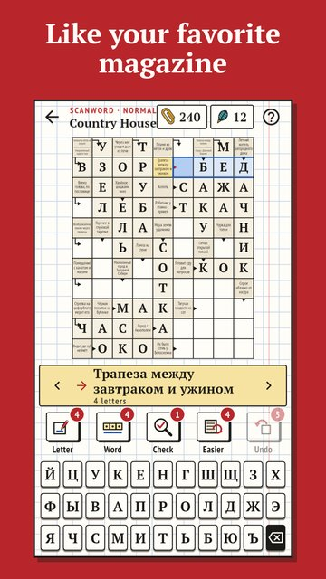

Car Scanwords
Scanwords for the people behind the wheel
Scanwords and word searches for drivers and everyone who loves cars: car parts, makes, road rules and the road.
Every solved puzzle drives a new part into your garage — body, engine, wheels, interior, headlights. Complete a car and it rolls into its bay.

- 300 arrow scanwords (in Russian) and 450 word searches (300 Russian, 150 English).
- 15 themes: under the hood, makes and models, road rules, Soviet cars, trucks, motorcycles, racing and rally, driver slang and more.
- The Virtual Garage: 50 cars in five halls, from Soviet classics to the future. No duplicates.
- A card for every car with its years and facts. No hints — a gold part.
- Uncle Misha, the mechanic next door, jokes and gives tips.
- A daily issue, a word of the day and daily tasks; festive issues for New Year, Defender of the Fatherland Day and Motorist's Day.
- Hints: reveal a letter or a word, check yourself. Three free every day.
- The puzzles work offline.
Start your engine and solve!